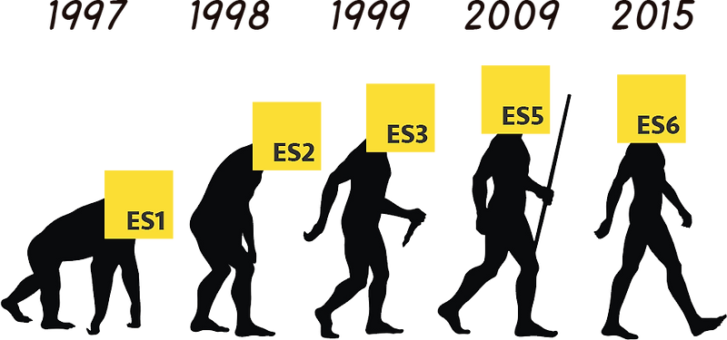

JavaScript (JS) es un lenguaje de programación interpretado que forma parte del estándar ECMAScript. Se utiliza principalmente en los navegadores web para crear páginas dinámicas e interactivas, mejorando la experiencia del usuario. Todos los navegadores modernos incluyen un motor de JavaScript, lo que permite ejecutar el código directamente en el cliente sin necesidad de programas externos. Con este lenguaje se pueden manipular elementos de la página mediante el DOM (Document Object Model), validar datos, crear animaciones y comunicarse con el servidor usando tecnologías como AJAX. Aunque comparte parte de su nombre con Java, son lenguajes distintos con objetivos diferentes. JavaScript está orientado a objetos, basado en prototipos y es uno de los pilares del desarrollo web moderno, siendo esencial junto con HTML y CSS.
JavaScript fue creado en 1995 por Brendan Eich en la empresa Netscape. Al inicio se llamó Mocha, luego LiveScript y finalmente quedó como JavaScript. El nombre generó confusión porque parecía estar relacionado con el lenguaje Java, aunque en realidad son lenguajes muy distintos; se trató más bien de una estrategia de marketing. Ese mismo año, Microsoft lanzó su propia versión llamada JScript para Internet Explorer, lo que ocasionó diferencias de compatibilidad entre navegadores. Para unificar criterios, en 1997 JavaScript fue estandarizado por la organización ECMA bajo el nombre de ECMAScript, lo que permitió establecer reglas comunes y garantizar que funcionara de manera similar en distintos navegadores. Desde entonces, JavaScript ha evolucionado constantemente y hoy es uno de los lenguajes más importantes en el desarrollo web moderno.

Aunque JavaScript nació en los navegadores, pronto se implementó también en servidores. Uno de los ejemplos más conocidos es Node.js, que permite usar JavaScript para crear aplicaciones del lado del servidor y manejar grandes proyectos. Más recientemente surgieron otras alternativas como Deno y el uso de WebAssembly (WASM).
Con el tiempo, JavaScript se volvió uno de los lenguajes más populares de internet. Al inicio fue criticado, pero la llegada de AJAX lo hizo esencial para aplicaciones dinámicas. Esto impulsó la creación de muchos frameworks y bibliotecas que facilitaron su uso, además de extenderlo fuera del navegador. En 2009 nació el proyecto CommonJS, pensado para estandarizar el uso de JavaScript fuera de la web. En 2015 se lanzó ECMAScript 6, una actualización importante que introdujo clases, módulos, funciones flecha, promesas y más. Desde 2016, ECMAScript se publica con actualizaciones anuales, lo que permite mejorar constantemente el lenguaje.
El uso principal de JavaScript es añadir interactividad a las páginas HTML a través del DOM (Document Object Model). Gracias a esto, se pueden crear experiencias dinámicas y atractivas para el usuario. Entre sus aplicaciones más comunes están el uso de AJAX para enviar y recibir datos sin recargar la página, la creación de animaciones que permiten mover, ocultar o cambiar el tamaño de elementos, el desarrollo de contenido interactivo como juegos o reproductores multimedia, la validación de formularios antes de ser enviados al servidor y el análisis de actividad de los usuarios para estadísticas o personalización. Los navegadores modernos incluyen motores de JavaScript que ejecutan el código de forma rápida. El primero fue SpiderMonkey (Netscape), seguido de otros como Rhino (Java). Estos motores permiten que el lenguaje funcione no solo en navegadores, sino también en entornos como servidores. Gracias a su compatibilidad universal en los navegadores, JavaScript se convirtió en el estándar para el desarrollo web y base de muchos frameworks modernos.